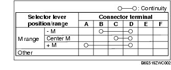

Selector lever component inspection (sport AT)
1. Disconnect the negative battery cable.
2. Remove the console.
3. Disconnect the selector lever component connector.
4. Inspect for continuity at the selector lever component.

- • If not as specified, adjust the selector cable. (See SELECTOR CABLE ADJUSTMENT.)
